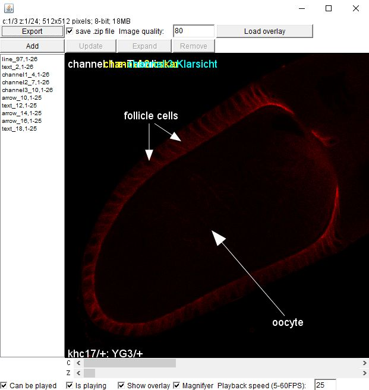
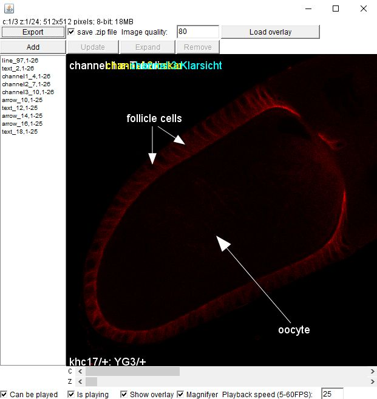

The overLay plugin
Although you can manually create a playable .zip file with appropriately named images and an overlay.xml, overLay may render the process a lot easier.
It allows you to create the graphical overlay by using the selection tools of ImageJ/FIJI and export the corresponding image sequences bundled with the overlay.xml
Installation
Download the overLay.jar to the plug-in folder of ImageJ or FIJI. After (re)starting the program, an 'overLay' folder appears in the Plugins menu. There are going to be two commands in there:
load overlay
overLay
The first one loads a .zip file or folder with OverLAY compatible content and opens the overLay editor, the second creates an overLay editor using the selected image, if there is any open. Otherwise, it also opens the load overlay panel.
The overLay editor

In the first row, you find the export/load facilities. Please not that the 'Load overlay' button loads only the contents of an overlay.xml and adds them to the overlay list (left of the image) if the dimensions specified in the overlay.xml and of the actual image match.
Below that, you can add, update and remove overlays.
First, use on of the ROI tools (e.g. a line, a polygon or a text) of ImageJ to select a region in the image, then click 'Add'. This adds the ROI with the color defined by the color picker tool of ImageJ to the overlay list
This ROI only appears ot the image slice where it was originally defined. If you want to increase/shrink its duration, select it in the overlay list move to the appropriate slice and click 'Expand'.
The 'Update' button allows you to reposition, recolor or change the type of the ROI. The original start slice and duration properties are preserved.
Below the image, you can adjust the behavior of the player (see the control tag).
Current version
The current version of overLay is 0.1. It uses the JDOM 2.0.6 library to parse .xml files, which is included in the .jar file.
The source code of overLay is available here
Although you can manually create a playable .zip file with appropriately named images and an overlay.xml, overLay may render the process a lot easier.
It allows you to create the graphical overlay by using the selection tools of ImageJ/FIJI and export the corresponding image sequences bundled with the overlay.xml
Installation
Download the overLay.jar to the plug-in folder of ImageJ or FIJI. After (re)starting the program, an 'overLay' folder appears in the Plugins menu. There are going to be two commands in there:
load overlay
overLay
The first one loads a .zip file or folder with OverLAY compatible content and opens the overLay editor, the second creates an overLay editor using the selected image, if there is any open. Otherwise, it also opens the load overlay panel.
The overLay editor
 In the first row, you find the export/load facilities. Please not that the 'Load overlay' button loads only the contents of an overlay.xml and adds them to the overlay list (left of the image) if the dimensions specified in the overlay.xml and of the actual image match.
Below that, you can add, update and remove overlays.
First, use on of the ROI tools (e.g. a line, a polygon or a text) of ImageJ to select a region in the image, then click 'Add'. This adds the ROI with the color defined by the color picker tool of ImageJ to the overlay list
This ROI only appears ot the image slice where it was originally defined. If you want to increase/shrink its duration, select it in the overlay list move to the appropriate slice and click 'Expand'. The 'Update' button allows you to reposition, recolor or change the type of the ROI. The original start slice and duration properties are preserved.
Below the image, you can adjust the behavior of the player (see the control tag).
Current version
The current version of overLay is 0.1. It uses the JDOM 2.0.6 library to parse .xml files, which is included in the .jar file.
The source code of overLay is available here